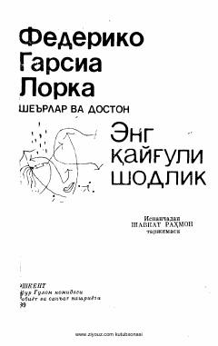

EQFederiko Garsia Lorkaning Shavkat Rahmon tarjimasidagi she'riy va dostonlar to'plami.
Ushbu to'plam mashhur ispan shoiri Federiko Garsia Lorkaning she'rlari va dostonlaridan iborat. Asarlar Shavkat Rahmon tomonidan ispan tilidan o'zbek tiliga tarjima qilingan.